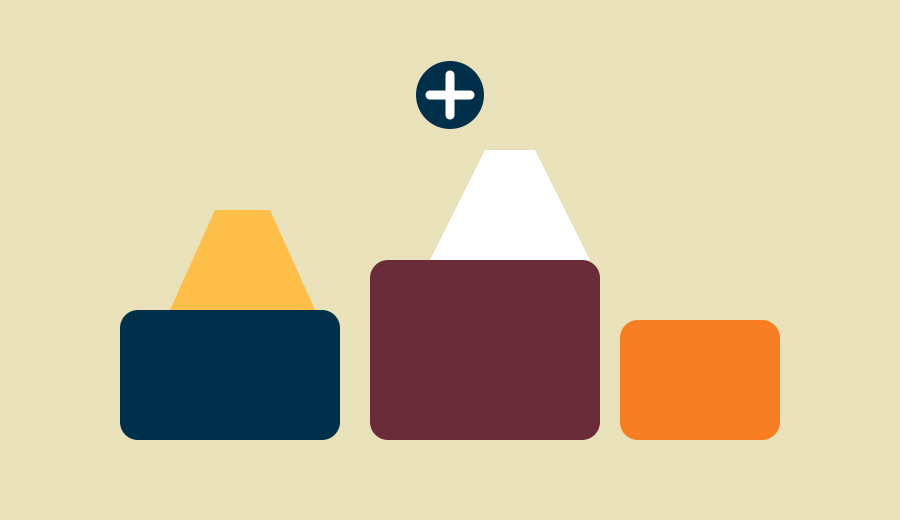
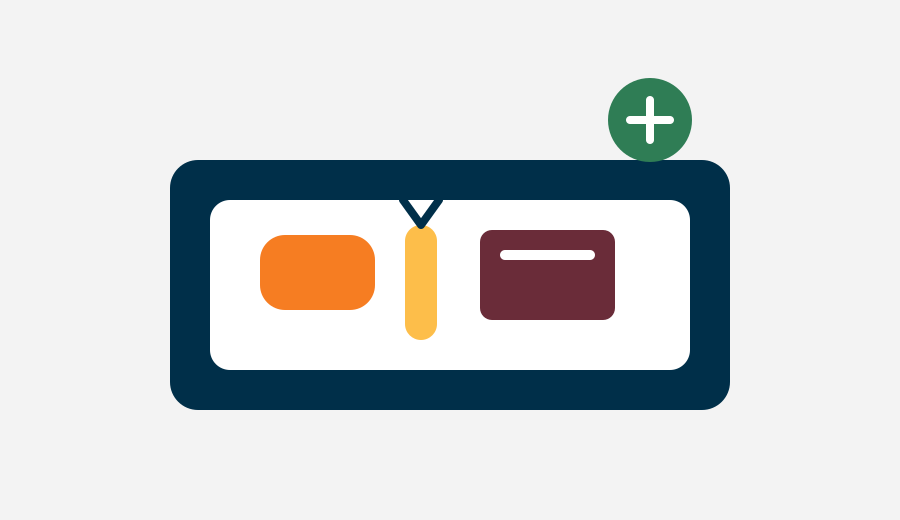

HigieneEstrutura
Pontos de higiene e cuidado
Espaços com banho, banheiro, lavatórios e itens básicos de higiene.
Frentes de atuação
A proposta reúne diferentes frentes para tornar o acesso à higiene e ao cuidado mais viável e contínuo.
Espaços com banho, banheiro, lavatórios e itens básicos de higiene.

Campanhas para arrecadação, triagem e distribuição de roupas limpas.

Arrecadação e disponibilização de produtos básicos de higiene pessoal.
Informações e encaminhamentos para serviços públicos, assistência social, saúde, documentação e outras redes de apoio.
Rede de apoio
Apoio operacional e administrativo para contribuir com as atividades do projeto.
Recursos financeiros, roupas e produtos de higiene, conforme necessidade e capacidade de recebimento.
Empresas, organizações e instituições públicas podem apoiar a implantação e a manutenção dos pontos.
Doações, voluntariado, patrocínios e parcerias podem contribuir para a implantação e manutenção da proposta.